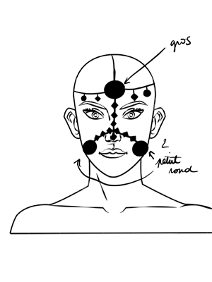
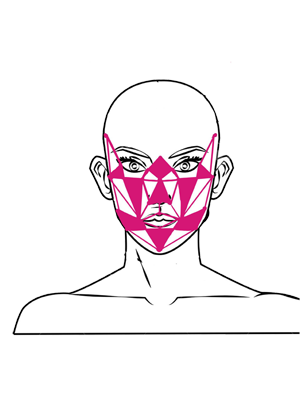
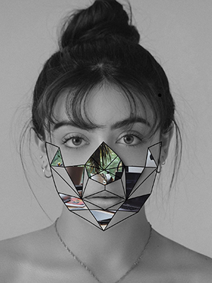

REFLECTOR
Laissez miroiter votre visage
En l’an 2020 + 1, vous êtes observé, surveillé, espionné, contrôlé par des outils de surveillance. Votre visage est votre identité. Pour la conserver, jouez-vous des dispositifs de surveillance qui souhaitent se l’accaparer. Le bijou de visage REFLECTOR trouble l’analyse des points nodaux grâce à un jeu de miroirs qui s’adapte parfaitement à votre morphologie. Sortez, réfléchissez et reprenez votre vie privée en main.
1.Reconnaissance : Activez votre caméra afin d’activer le système de reconnaissance faciale pour que votre masque vous aille à la perfection.

2.Personnalisation : Choisissez la matière et la couleur de votre bijou de visage.
3.Aussi, nous vous proposons des positionnements stratégiques pour les miroirs. Vous pourrez changer leur forme et leur teinte par la suite.

4.Validation : Nous vous envoyons votre colis en toute discrétion. Votre identité n’est plus reconnue.
R&D 1 : disposition des miroirs
R&D 2 : mise en situation

R&D 3 : mise en situation

R&D 4 : croquis final
R&D 5 : prototype
Crédits
Équipe "réflexion" :
Camille Chastagnol,
Cassandre Faure,
Flavie Foltran,
Alexane Tessier.
- Photo de Jimmy Fermin (Unsplash), Cassandre Faure.
- Application : Spark AR
- Application : Procreate